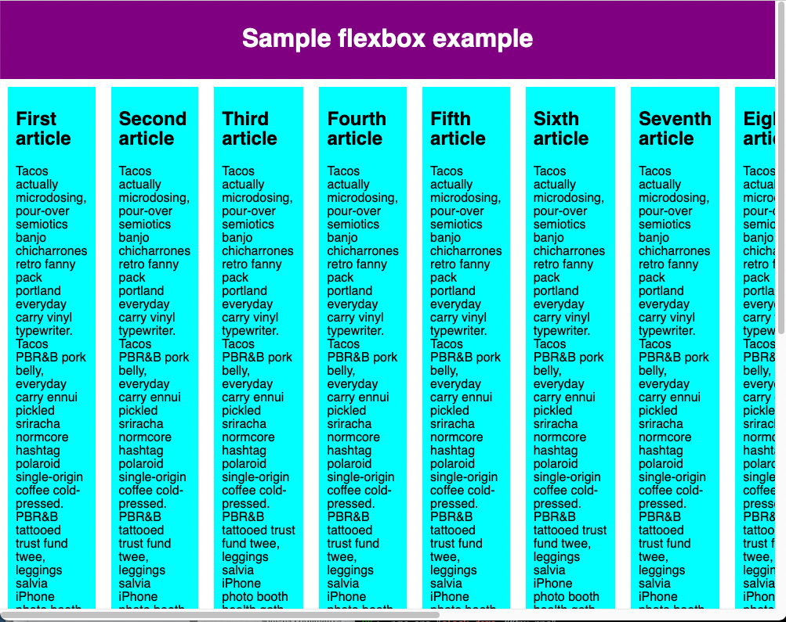

Урок №4
Тема урока: Перенос строк
Проблема может быть в том, что, если у вас фиксированная ширина или высота макета, ваши flexbox элементы переполнят контейнер и нарушат макет. Посмотрите на этот пример: flexbox-wrap0.html и посмотрите его вживую (сохраните его себе на компьютер, если хотите изучить этот пример):
Мы видим, что дочерние элементы выбиваются из своего родителя-контейнера. Один из способов как это исправить — добавить следующее свойство в CSS-правило для <section>:
CSS
flex-wrap: wrap;
Также добавьте следующее свойство в CSS-правило для <arcticle>:
CSS
flex: 200px;
Попробуйте, и вы увидите, что так макет стал выглядеть гораздо лучше:

Теперь у нас в макете несколько рядов— все дети-блоки, которые не помещаются, переносятся на следующую строку, чтобы не было переполнения. Свойство flex: 200px, установленное на статьях, означает, что каждый блок должен быть минимум 200 пикселей в ширину. Мы обсудим это свойство более подробно позже. Вы также можете заметить, что несколько дочерних блоков в последней строке стали более широкими, так что вся строка стала заполнена.
Но мы можем пойти дальше. Прежде всего, попробуйте изменить значение свойства flex-direction на row-reverse — теперь у вас также макет в несколько строк, но он начинается из противоположного угла окна браузера и теперь выстраивается в обратном порядке.
На этом этапе нужно заметить, что существует сокращение для свойств flex-direction и flex-wrap — flex-flow. Например, вы можете заменить
CSS
flex-direction: row;
flex-wrap: wrap;
на
CSS
flex-flow: row wrap;